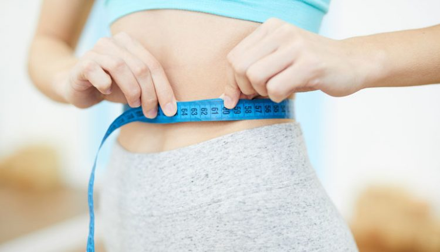
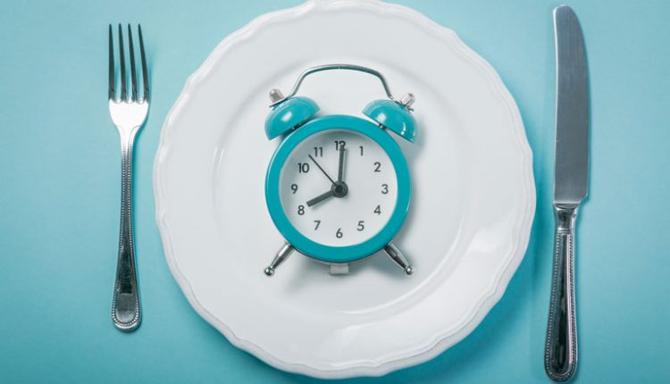
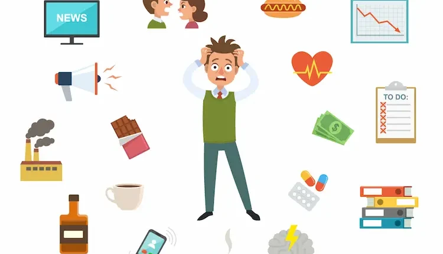
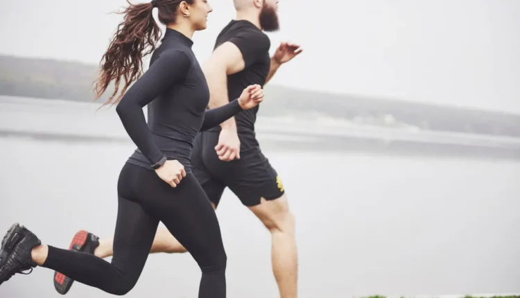
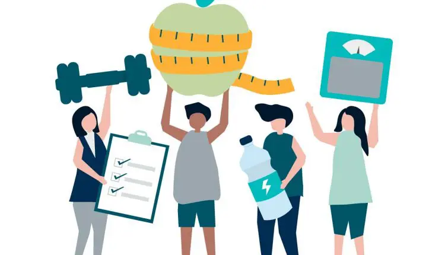
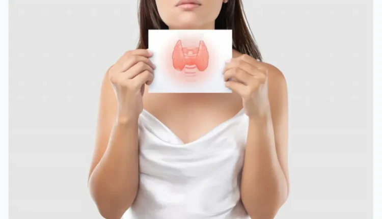

Здравословно отслабване
Въпреки че има безкрайни диети, добавки и заместители на хранене, които твърдят, че осигуряват бърза загуба на тегло, повечето не разполагат с никакви научни доказателства. Най-просто казано, отслабването означава, че изгаряте повече калории, отколкото консумирате.
Как да отслабна бързо? Вижте 11-те прости стъпки подкрепени от научни изследвания
Как да отслабна бързо? Въпрос който си задава всеки с наднормено тегло, освен тези от вас, които
това не ги притеснява.
Но все пак, трябва да сте наясно, че повечкото килограми не са свързани само с външният вид, а и
с редица здравословни проблеми.
Ето защо, е необходимо да намерите отговор на въпроса – „как да отслабна?“.
Има различни начини да отслабнете много бързо.
Тези стратегии включват упражнения за отслабване, следене на приема на калории, периодично
гладуване и намаляване на броя на въглехидратите в диетата за остлабване.
Ето един прост план в 11 стъпки за бързо отслабване, подкрепен от научни изследвания.
1. Намалете въглехидратите
Най-важната част е да се намалят захарите и нишестетата (въглехидратите).
Рафинираните въглехидрати са силно преработени храни, които вече не съдържат фибри и други
хранителни вещества. Те включват бял ориз, хляб и други тестени изделия.
Тези храни се усвояват бързо и се превръщат в глюкоза много бързо. Излишната глюкоза навлиза в
кръвта и провокира хормона инсулин, който насърчава складирането на мазнини в мастната тъкан.
Това допринася за наддаване на тегло.
Ето защо, ако наистина се интересувате от това „как да отслабнете“, намаляването на
въглехидратите е едно от нещата които трябва да направите.
Когато е възможно, трябва да смените преработените и сладки храни с по-здравословни храни, които
включват:
- пълнозърнест ориз, хляб и макаронени изделия вместо бял ориз ,бял хляб и др.
- плодове, ядки и семена вместо закуски с много захар (понички, вафли, кроасани и др.)
- билкови чайове и вода, вместо газирани напитки с високо съдържание на захар
- смути с вода или мляко, вместо плодов сок
Когато го направите, чувството ви за глад намалява и в крайна сметка приемате много по-малко
калории.
Ако сте чули за кето диетата, тя е на този принцип, но тя с много ниско съдържание на
въглехидрати.
Друг широко популярен план за хранене, сред хората които искат да отслабат бързо е, така
наречената LCHF диета.
Друго предимство на намаляването на въглехидрати е, че тогава се понижават нивата на инсулин,
карайки бъбреците ви да изхвърлят излишния натрий и вода от тялото ви. Това намалява подуването
и води до отслабване.
2. Опитайте с периодично гладуване
Периодичното гладуване е начин на хранене, който включва редовни краткосрочни пости и консумация
на храна в рамките на кратък период от време.
Няколко проучвания посочват, че периодичното гладуване, което е с продължителност до 24 седмици,
води до загуба на тегло и бързо отслабване при хора с наднормено тегло.
Най-разпространените методи за периодично гладуване включват следното:
- Alternate Day Fasting (ADF): Основната идея е, че постите в един ден, а след това на следващия ден ядете това, което искате. имате право да ядете около 500 калории на гладно, или 20-25% от енергийните ви нужди.
- Методът 16/8: Наричан още от протокола Leangains, той включва прескачане на закуската и ограничаване на дневния ви период на хранене до 8 часа, например от 1 до 21 ч. След това постите 16 часа.
- Диетата 5:2: С тези методи консумирате само 500–600 калории в два непоследователни дни от седмицата, но ядете нормално останалите 5 дни.
В дните когато може да ядете е най-добре е да приемете здравословна храна, като в средиземноморската диета например. Старайте се да избягвайте прекомерното хранене, нали основната цел е да намерите отговор на въпроса „как да отслабна?“.
3. Яжте протеин, мазнини и зеленчуци
Всяко едно от храненията ви трябва да включва източник на протеини, мазнини и нисковъглехидратни
зеленчуци.
Протеинът може да регулира апетитните хормони, за да помогне на хората да се чувстват
пълноценни.
Това се дължи най-вече на намаляване на хормона на глада грелин и повишаване на хормоните за
ситост пептид YY, GLP-1 и холецистокинин.
Когато става въпрос за това как да отслабнете, протеинът е кралят на хранителните вещества.
Доказано е, че това засилва метаболизма и изгарянето на 80 до 100 калории на ден.
Протеинови източници
- Месо: говеждо, пилешко, свинско, агнешко и др.
- Риба и морски дарове: сьомга, пъстърва, скариди и др.
- Яйца: целите яйца с жълтъка са най-добри.
- Мляко и млечни продукти: прясно мляко, кисело мляко, кефир, извара и др.
- Бобови: граха, боб, леща, нахут, соя, фъстък и др.
- Ядки: бадеми, орехи, лешници, шам фъстък и др.
- Семена: чиа, конопено семе, ленено семе, тиквено семе
- Пълнозърнести: амарант, царевица, киноа и др.
- Плодове: гуава, авокадо, киви, джакфрут и др.
- Зеленчуци: броколи, артишок, кълнове от люцерна и др.
- Други: спирулина, хранителна мая, микопротеин, сайтан
Зеленчуци с ниско съдържание на въглехидрати
- Броколи
- карфиол
- спанак
- домати
- зеле
- брюкселско зеле
- зеле
- Маруля
- краставица
Не се страхувайте да заредите чинията си с тези зеленчуци с ниско съдържание на въглехидрати. Можете да ядете огромни количества от тях, без да надхвърляте 20–50 нетни въглехидрати на ден. Но ако имате проблем с щитовидната жлеза, някои от тях не са подходящи за вас, затова погледнете диетата за отслабване при Хашимото.
Източници на мазнини
- Зехтин
- Кокосово масло
- Масло от авокадо
- Масло
Яжте 2–3 пъти на ден. Ако още сте гладни, добавете четвърто хранене.
Диета, основана предимно на месо и зеленчуци, съдържа всички фибри, витамини и минерали, от
които се нуждаете, за да сте здрави.
4. Контролирайте нивата си на стрес
Стресът задейства освобождаването на хормони като адреналин и кортизол, които първоначално
намаляват апетита като част от борбата или реакцията на организма.
Въпреки това, когато сте под постоянен стрес, кортизолът може да остане в кръвообращението за
по-дълго време, което ще увеличи апетита и ще започнете да се храните повече.
Кортизолът сигнализира за необходимостта от попълване на хранителните запаси на организма от
предпочитания източник на гориво, който е въглехидрати.
След това инсулинът транспортира захарта от въглехидратите от кръвта до мускулите и мозъка.
И, ако тази захар не се изразходи, тялото ще я съхранява като мазнина.
Учените откриха, че прилагането на 8-седмична интервенционна програма за управление на стреса,
ще доведе до значително намаляване на индекса на телесната маса на деца и юноши с наднормено
тегло и затлъстяване.
5. Фитнес и кардио тренировки
Не е нужно да тренирате, за да отслабнете, но ако искате да стане по-бързо се препоръчва.
Най-добрият вариант е да ходите на фитнес 3–4 пъти седмично. Ако сте новак във фитнеса,
попитайте треньор за съвет.
Повдигайки тежести, ще изгорите много калории и ще попречите на метаболизма ви да се забави,
което е често срещан страничен ефект от отслабването.
Друг плюс е, че докато губите значителни количества телесни мазнини, можете да натрупате малко
мускули.
Ако вдигането на тежести не е опция за вас, тогава е достатъчно да правите някои кардио
тренировки като ходене, бягане, колоездене или плуване.
6. Качествен сън
Добрият нощен сън е едно от най-добрите неща, които можете да направите, за да поддържате
здравословно тегло и цялостно здраве.
Проучванията показват, че лошият сън е свързан с наддаване на тегло и други здравословни
разстройства. Когато учените анализираха данни от 16 години за 68 183 жени на средна възраст, те
откриха, че тези, които спят не повече от пет часа на нощ, са с 15% по-склонни да имат
затлъстяване в сравнение с тези, които спят по седем часа на нощ.
Недостатъчният сън може също да повлияе на производството на регулиращите апетита хормони грелин
и лептин, което може да накара хората да се чувстват гладни през целия ден. Освен това лошият
сън повишава кортизола и може да доведе до по-трудно сваляне на телесни и коремни мазнини.
br
За да имате добър сън се препоръчва правилото 3-2-1, което означава да спрете да работите три
часа преди лягане, да спрете да ядете два часа преди лягане и да спрете цифровите занимания
(телевизия, телефон, лаптоп и т.н.) един час преди лягане, за да подобрите дълбокия си сън.
7. Движете повече
Един от най-лесните начини за отслабване е да повишите термогенезата на активността си без упражнения – енергията, изразходвана за всичко, което правите извън хранене, сън или упражнения. Малки промени като носенето на вашите хранителни стоки вместо използването на количка, паркирането по-далеч от входа на търговския център, изкачването по стълбите вместо асансьора или дори по-честите разходки за изхвърляне на боклука, може да доведе до стотици допълнителни изгорени калории.
8. Пийте повече вода
Проучванията показват, че пиенето на повече вода е свързано със загуба на тегло, независимо от
диетата и упражненията.
Достатъчният прием на вода може да помогне за увеличаване на чувството за ситост и борба с глада
за захар. Водата също е необходима за липолизата, процесът на тялото за изгаряне на мазнини за
енергия.
Опитайте се да пиете две чаши вода преди всяко хранене. Проучванията показват, че този лесен ход
може да увеличи загубата на тегло.
9. Намалете приема на преработени храни
Проведено проучване разкрива, че това, което ядете, е най-важно за отслабването.
Килограмите ще паднат по-бързо, ако подобрите качеството на храните, които приемате. Един от
най-здравословните начини за отслабване е да намалите приема на захар и бързо метаболизирани
въглехидрати.
По-специално, премахнете или драстично намалете приема на храни с високо гликемично натоварване,
като сладки закуски, преработени въглехидрати и безалкохолни напитки. Когато избягвате или
намалите пържените картофи, чипса, крекерите и други подобни, ще ускорите загубата на килограми.
10. Калориен дефицит
Това е един от най-разпространените и ефективни начини за отслабване. Проучванията показват, че
много нискокалорични диети обикновено имат за цел да намалят дневния енергиен прием с 500–750
kcal.
Препоръчителният калориен прием за енергийно ограничение се осъществява чрез диети от 1200–1500
kcal/ден за жени и 1500–1800 kcal/ден за мъже.
Идеята е да се консумират по-малко калории, за да може тялото да използва излишните мазнини и да
ги използва като алтернативен източник на енергия. В този процес започвате да изгаряте повече
мазнини за енергия, което в крайна сметка води до загуба на тегло.
Намаляването на дневния енергиен прием с 400–500 kcal може да доведе до умерена загуба на тегло
от приблизително 0,5 кг на седмица или 2 kg на месец.
Проучванията обаче показват, че такава загуба на тегло обикновено се наблюдава само през първите
месеци, тъй като скоростта на загуба на тегло може да се забави поради хормонални адаптации,
противопоставящи се на загубата на тегло.
11. Други съвети за бързо отслабване
Колкото и да е странно, начинат по който консумирате хранате също може да ви помогне.
- Дъвчете бавно и старателно – Преглед на много проучвания показва, че хората, които ядат бързо, са по-склонни да наддават на тегло, отколкото хората, които ядат сравнително бавно. Това е така, защото старателното дъвчене на храната води до по-бавно хранене. В резултат на това води до повишена пълнота и малък размер на порциите.
- Използвайте по-малки чинии – Интуитивно използването на по-малка чиния за храна ще ви помогне да отслабнете бързо. Проучванията показват, че по-голямата чиния може да накара порциите да изглеждат по-малки, отколкото са.
Очаквания
Като отговор на въпроса „Как да отслабна бързо?“, може да очаквате резултат от сваляне на 5-10
килограма (понякога повече) през първата седмица, а след това постепенно ще намалявате теглото
си.
Първите дни може да се почувствате малко странно. Тялото ви изгаря въглехидрати през всичките
тези години, така че може да отнеме време, за да свикне с изгарянето на мазнини.
Обаче, след първите няколко дни повечето хора съобщават, че се чувстват много добре, с още
повече енергия от преди.
Отслабване в корема
Как да отслабна в корема и ханша? Отслабването е трудно като цяло, но свалянето на мазнините от
корема може да ви се стори непреодолимо.
Въпреки това има няколко неща, които можете да направите, за да отслабнете в корема и ханша,
вижте някои от тях
- Избягвайте храни, които съдържат трансмазнини
- Не яжте много сладки храни
- Яжте много разтворими фибри
- Намалете нивата на стрес
- Избягвайте храни, които съдържат трансмазнини
- Опитайте периодично гладуване
- Добавете ябълков оцет към вашата диета
- Спазвайте стриктна диета за приема на храна
- Редовни упражнения
Трябва да сте наясно, че няма вълшебни решения за отслабване в корема. Загубата на тегло винаги изисква известно усилие, ангажираност и постоянство от вас самите.
Отслабване в краката
Доста хора търсят решение на въпроса как да отслабнем в краката? Намирането на отговора на този
въпрос може да включва комбинация от упражнения, които тонизират мускулите на краката и общи
промени в загубата на тегло.
Въпреки че няма такова нещо като бързо отслабване на точно конкретно място, можете да спазвате
рутина, която да ви помогне да се отървете от общите излишни телесни мазнини.
Комбинацията от диета и правилните упражнения ще ви помогнат да постигнете най-добри резултати.
Отслабване при хипотиреоидизъм
Хипотиреоидизъм се появява, когато щитовидната жлеза не е в състояние да произвежда нивата на
хормоните, от които тялото ви се нуждае, за да регулира ефективно важни метаболитни процеси.
Необяснимото наддаване на тегло е често срещан признак на хипотиреоидизъм, особено ако започнете
да наддавате на тегло, без да правите големи промени в диетата или нивото на активност.
Тогава идва въпроса как да отслабнем при хипофункция на щитовидната жлеза?
Напълно възможно е да отслабнете, ако имате хипофункция на щитовидната жлеза, особено ако се
придържате към режима на лечение, както е указано, и се консултирате редовно с вашия лекар
относно всякакви странични ефекти или продължаващи симптоми.
Ако хипотиреоидизмa е единствената основна причина за наддаване на тегло, вие ще започнете да
губите наднормено тегло веднага щом нивата на щитовидната жлеза се балансират.
Преценете внимателно диетата си и направете здравословни промени, които могат да ви помогнат да
отслабнете. Намалете приема на алкохол, сладкиши и храни с високо съдържание на натрий, тъй като
те могат да допринесат за наддаване на тегло.
Редовните упражнения помагат за повишаване на метаболизма и енергийните нива. Ако вече
тренирате, увеличете интензивността на тренировките.
Често задавани въпроси
Как да отслабна с 10 кг за 1 седмица?
Можете да свалите няколко килограма, като спазвате нисковъглехидратна диета. Яжте пълноценни храни и избягвайте преработени. Напълнете чинията си със зеленчуци и ограничете нишестените въглехидрати и добавените мазнини за седмицата. Намалете всички закуски и не яжте нищо след вечеря. Повдигането на тежести и правенето на интервални тренировки с висока интензивност са сред най-добрите начини за отслабване и изтощаване на мускулните запаси от гликоген.
Как да отслабна в краката?
Според проучване със спортисти не е възможно да се насочи загубата на тегло само към една област на тялото. Ако човек започне да губи тегло, е склонен да го прави през цялото си тяло. Това означава, че всяка техника за отслабване може да работи за намаляване на мазнините в краката. Фокусирането върху упражнения, които тонизират мускулите на краката и промени в начина на живот като водене на диета за отслабнат, са задължителни.
Как да отслабна без диета?
Закусвайте всеки ден. Затворете кухнята през нощта. Докато се храните, дъвчете бавно и продължително. Използването на по-малка чиния може да ви помогне да ядете по-малко. Яжте храни богати на протеини, той има мощни ефекти върху апетита. Лошият сън и излишъкът от стрес могат да нарушат баланса на няколко важни хормона, регулиращи апетита, което ще ви накара да ядете повече.
Как мога да отслабна без упражнения?
Възможно е да отслабнете само като се храните правилно, но трябва да имате търпение. Диета с ниско съдържание на въглехидрати и мазнини и високо съдържание на протеини и фибри може да ви помогне да отслабнете. Трябва също така да дъвчете старателно и да използвате по-малки чинии.
Заключение
Най-здравословният начин за отслабване включва балансиране на множество фактори като здравословно
хранене, физически дейности, промяна на начина на живот, намаляване на стреса и т.н.
Поддържането на здравословно тегло е от съществено значение поради различни причини.
Това може да ви направи по-уверени и да ви мотивира да продължите ефективно с целите си за
отслабване. Избягването на заседналия начин на живот и ходенето на тренировка поне четири дни в
седмицата може да доведе до добри резултати.
Въпреки че отслабването може да звучи много предизвикателно, спазването на правилните практики
може да улесни задачата за вас.